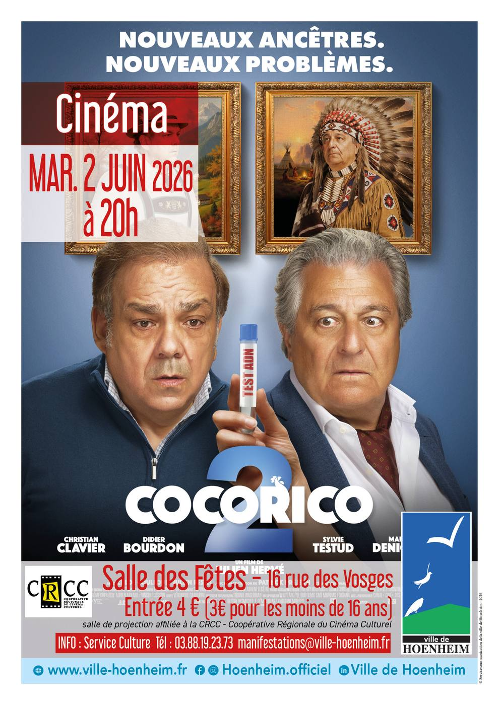

- Cet événement est terminé
Cinéma : Cocorico 2
2 juin à 20 h 00 min - 21 h 40 min
Navigation de l'événement

La ville de Hoenheim vous invite à une séance de cinéma le mardi 2 juin 2026 à 20h à la salle des fêtes.
Plein tarif : 4 Euros / Tarif réduit (moins de 16 ans) : 3 Euros
Le film « Cocorico 2 » est pour tout public.
Cette comédie dure 1h 31min.
Après avoir découvert la vérité sur leurs origines, grâce à des tests ADN aux résultats pour le moins surprenants, les Bouvier-Sauvage et les Martin décident d’enterrer la hache de guerre, pour organiser le mariage de leurs enfants. Mais c’était sans compter sur un imprévu de taille : un cousin de Frédéric a été retrouvé grâce aux tests… Révélant que les résultats étaient erronés. Les deux familles vont découvrir que leurs ancêtres n’ont pas fini de les surprendre !